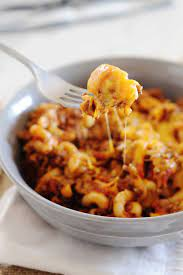

Carne con Papas

Are you ready to enjoy all of this goodness?
Carne con papas translates to english as "meat with potatoes." Though, carne in this instance is better translated as beef.
I cannot imagine that this dish would be very appealing if it were made with turkey or chicken, but you do you! I became
familiar with this dish in my youth. It was a staple cheap meal that fed the masses, or in other words, a big family. Enjoy!
Ingredients
- 1 lb ground beef or stew meat
- 4 cups tomatoes (fresh or canned, whatever you like they're going to get blended!)
- 1 1/2 lbs potatoes (your favorite kind!)
- 2 cloves garlic
- 1 cup chicken broth
- 1/2 cup pasta (elbow macaroni is what I've always used, but any small pasta will do)
- Salt and pepper
- Optional 1-2 serrano peppers (if you like that SPICE!)
Instructions
- Chop the potatoes into small cubes. (peel if you prefer) If you opted to add serrano peppers you can seed and finely dice them now.
- Blend the tomatoes, chicken broth and garlic until smooth. Add some salt! A tsp should do, but its up to you!
- Heat a large pot over medium heat and add the beef. Cook until browned.
- Add the tomato mixture and bring to a boil, then reduce heat and simmer for 20 minutes. (I have simmered this recipe for a few hours before. In my experience, the longer you simmer beef in stews like this, the better it tastes! Definitely reccomend a longer simmer if you are using stew meat!)
- Add the potatoes and simmer 10-15 minutes. The larger your potatoe cubes, the longer they'll need to cook. (If you chose to use serranos add them now!)
- Add the pasta and cook for an additional 10 minutes.
- Salt and pepper to taste.
- Enjoy!
*Additionally, you can top your bowl with cheese, I usually do! Cheddar, parmesan or something else? It's up to you!